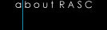
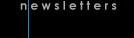
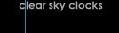
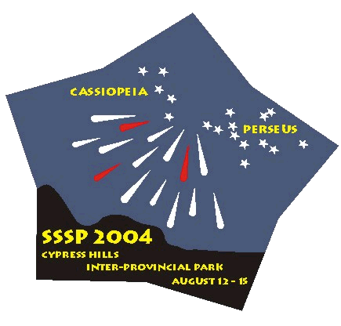

|  |
|  |
|  |

(Centre Block - 30km South of Maple Creek on Hwy 21)
August 12 to August 15, 2004
An event organized by the Regina and Saskatoon Centres of the Royal Astronomical Society of Canada
Address of this site: http://duke.usask.ca/~ges125/rasc/sssp2004.html
Joshua Roth
Senior Editor, Sky and Telescope Magazine
Registration
Early Registration
Late and At-the-Door Registration
Singles - $17
Singles - $27
Couples - $28
Couples - $38
Families - $34
Families - $44
William Hydomako
Registrar, SSSP 2004
135 Manning Cres.
Saskatoon,
SK Canada S7L 6J3
E-mail: wm.hydomako@sasktel.net
Phone:
306-384-4781

Star Party Events
| Come early and stay late if you choose. Events take place in the
Resort's Wapiti Room (WR), the Meadows Campground (MC) or the Park
Amphitheatre (PA). Every day ends with viewing in the MC.
THURSDAY AUGUST 12
|
Accommodation and
Camping For hotel room, cabin or condo accomodation information, contact the
Resort at 306-662-4477. Make sure you tell them you are with the Star
Party and that you want a room in our reserved block. Additional
information about the Resort is available at their website: http://www.cypressresortinn.com/.
Please note that if you are coming and want accommodation in Cypress Park
Resort Inn cabins, condos or hotels rooms, you need to book *now*,
since the number of available rooms is very limited. Note that our room
block in the Resort is for Friday and Saturday night only. Accommodations
in the Resort for Thursday night may be very limited. If you are going to tent with most of us in the Meadows Overflow
Campground, where all the observing will occur, you do not have to reserve
a camping space, but you *must* register when you enter the park at
the campground office and pay the appropriate camping fees. If you want to camp away from the Star Party in the 'regular'
campgrounds, we recommend strongly that you book a spot ahead in Rainbow,
Terrace or other campgrounds. Note that the Meadows Overflow is a slightly
more rustic campsite, with water taps, outhouses, fire-pits, picnic tables
and both treed and open camping sites. (There are no showers at the
Meadows, but the showers are available at the Rainbow campground, a
10-minute walk away). Most of us have camped at the Meadows Overflow for
the last 7 years and have had a blast there. Those with motor homes will
find that Meadows does not have hook-ups, but if you are self-contained,
you are welcome to park the old rust-buckets up with the tenters - most
do! To pre-book camping (if not in the Meadows) Ά call the campground
reservation office at 306-662-5484. Further information about the park is
available from their website: http://interactive.usask.ca/ski/tourism/sask_parks/cypress.html. Park Entry Fees Since the SSSP is held in a provincial park, entry fees apply, and you
will have to pay these at the gate: $7/day or $17/3-day
pass.  T-Shirts and Golf
Shirts As in the past, T-shirts and Golf-shirts should be available by
pre-order; generally only a few are available as extras at the star party.
The shirt logo is shown above. Prices are as follows: Pre-order before July 26th - T-shirts are $17.50, Golf shirts are $30.00; Prices at SSSP - T-shirts are $20.00, Golf shirts are $35.00. About the gorgeous Cypress Hills
Park If you have not been to the Cypress Hills Inter-provincial Park, you
are missing something! This is a beautiful park, nested in Lodgepole pines
on a butte that reaches 1460 meters above sea level, and is the highest
point in Canada between the Rockies and Labrador. (Because of the altitude
- bring warm clothes for nighttime!) Its unique position gives it an
unusual weather advantage. Historical weather maps published by Jay
Anderson in the RASC ObserverŒÍs Handbook indicate that the area around
Cypress Hills has the best chance for clear skies (less than 30 percent
mean nighttime cloud cover) in July and August compared to any other site
in Canada. The park is very modern and well equipped for families of tired
astronomers. The park features a lake, hiking trails, paddle boats, mini
golf, regular golf, a general store, a full resort, two restaurants, an
ice-cream and snack shop, a souvenir shop, moose and other varmints (no
snakes or big cats), ball diamonds, picnic grounds, tennis courts, an
outdoor heated pool, hot tub, a museum and of course, the SSSP! More on
the park is found at: http://interactive.usask.ca/ski/tourism/sask_parks/cypress.html.
You are Here! The location of the center of the Meadows campground is:
In the Cypress
Area
SSSP 2005
Other things to see while you are in the area:
End
We'll be back on August 4 - 7, 2005.